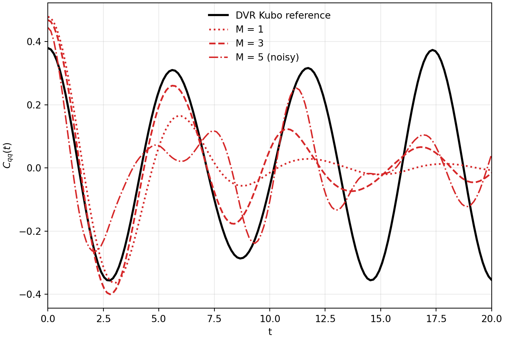

Matsubara Series - Part III
Quartic Benchmark and Phase Reweighting
Parts I-II introduced the phase-space problem and the low-mode Matsubara construction. This note turns that structure into a partial reproduction of the quartic benchmark: the Kubo \(q-q\) correlation for the one-dimensional quartic oscillator \(V(q)=q^4/4\), comparing a sinc-DVR quantum reference with \(M=1,3,5\) Matsubara estimators.
Benchmark definition
The target observable is
with \(m=1\), \(\hbar=1\), and \(\beta=2\). The quantum reference is computed by sinc-DVR diagonalization and the spectral Kubo sum.
Matsubara estimator
The Matsubara estimator samples the positive Hamiltonian part and reweights the observable by the real part of the phase:
The \(Q\) coordinates are sampled by HMC from \(e^{-\beta U_M(Q)}\), momenta are drawn from the Gaussian kinetic distribution, and the retained Matsubara modes are propagated with velocity-Verlet.
Why use \(P\) and \(-P\) pairs?
The Hamiltonian part is even under \(P\to -P\), while the phase changes sign. For even observables, the imaginary part cancels, leaving a cosine reweighting. Pairing \(P\) with \(-P\) is a simple antithetic estimator that reduces odd-in-momentum noise without changing the target expression.
Workflow
- Compute the quantum \(C_{qq}(t)\) by DVR as a black reference curve.
- Build Matsubara Fourier bases for \(M=1,3,5\).
- Evaluate \(U_M(Q)=\langle V(q(\tau))\rangle_\tau\) and its gradient by quadrature.
- Sample \(Q\) with HMC and sample \(P\) from the Gaussian kinetic factor.
- Propagate the Matsubara modes and reweight by \(\cos(\beta\theta_M)\).
Result

The run printed the following sampling diagnostics:
curve HMC acceptance <cos(beta theta)>
M1 0.99843750 1.00000000
M3 0.99018519 0.14547552
M5_noisy 0.98037037 -0.02066674The acceptance rates are high, so the HMC proposal is not the bottleneck. The phase average collapses as \(M\) increases and can even change sign in a finite run; numerator and denominator then become differences of noisy signed contributions. This is why a stochastic rerun of the \(M=5\) curve can look different even when the deterministic Matsubara propagation is unchanged.
Relation to CMD, QCMD, and RPMD
The same literature explains why practical descendants modify the exact Matsubara structure. CMD keeps the centroid-like mean-field motion but can suffer curvature problems when the ring-polymer distribution bends around a curved valley. QCMD changes coordinates to make the constrained distribution more compact. RPMD can be viewed as retaining the spring structure that emerges after manipulating the phase, while dropping the imaginary terms that would make direct sampling impractical.
Code used in this note
- matsubara_quartic_benchmark.py preserves the checked reproduction figure by default and can regenerate the stochastic benchmark with
--recompute. - willatt_fig39_partial_repro.csv stores the archived time-series data from the local partial reproduction.
- quartic-matsubara-meta.csv contains the HMC acceptance and phase-average values printed above.
References
- Willatt, Matsubara Dynamics and its Practical Implementation, PhD thesis, University of Cambridge (2017).
- Trenins and Althorpe, J. Chem. Phys. 149, 014102 (2018).
- Prada, Pos, and Althorpe, J. Chem. Phys. 158, 114106 (2023).